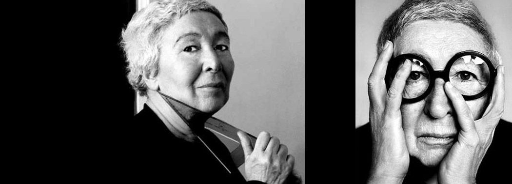

Contrairement à ce que la légende a souhaité retenir de l’architecte et designer italienne, sa grande œuvre n’est pas une lampe culte mais, sans hésiter, un chantier titanesque et français. Entre 1980 et 1986, elle participe à la transformation hors normes de l’ancienne gare d’Orsay à Paris en musée consacré aux œuvres d’art du XIX ème siècle. Elle se voit confier l’aménagement intérieur de ce lieu vieux de près d’un siècle et longtemps voué à la destruction dans un Paris des Trente Glorieuses désireux de faire table rase de son passé.

Gae Aulenti
Architecte et designer italienne
“The conscious principle in [design] has been to achieve forms that could create experiences, and that could at the same time welcome everyone’s experiences with the serenity of an effortless development"